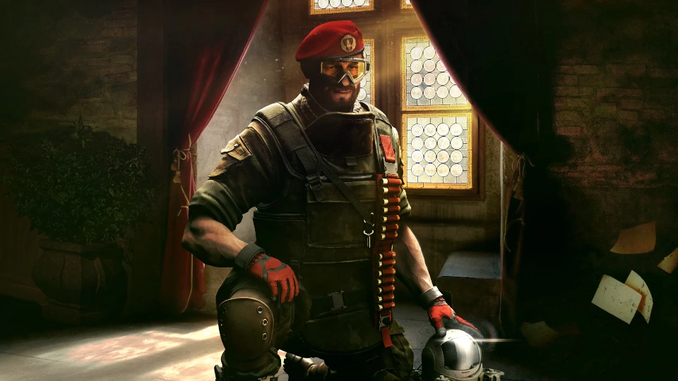

NEW DEFENDER: MAESTRO

Maestro is a colorful addition to the intel gameplay family. His expertise lies in blocking access to key locations, and his blunt style allows him to see through smoke and mirrors, for which he has no patience. He shines when joined by his long-time G.I.S. teammate, Alibi.
The character of Maestro was inspired by explorers from the Italian counter-terrorism unit, Gruppo di Intervento Speciale (G.I.S.). He is a wanderer known for his brilliant exploration, reconnaissance, and scouting techniques.
His name is Adriano Martello. Oldest in a family of eight children, he grew up in Rome, but attended the Military Academy of Modena at 18. He then joined the Carabinieri and earned a spot as an Explorer Paratrooper in the 1st Paratrooper Regiment known as Tuscania. After several distinguished tours, Martello qualified for Gruppo di Intervento Speciale (G.I.S.) and participated in joint operations in Iraq, earning a facial scar from a roadside IED. He went into private consultation where his courses quickly became a top-rated operator boot camp for teaching advanced techniques to Tier 3 and Tier 2 units, as well as private military companies.
The Tuscania eventually convinced Martello to re-enlist to help upgrade one of their units to a Tier 2 Special Forces classification, and this enabled him to join Rainbow as a representative of the Italian Units.